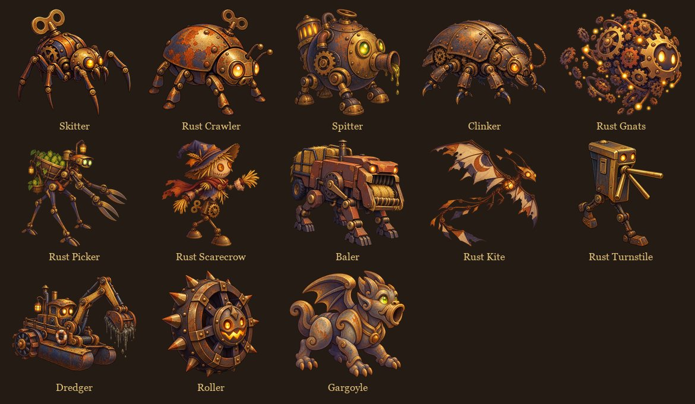

Rust of Wicklow, the Hopfields and Tollbridge
Every ordinary Rust met between Chapters 1 and 3, with stats, weaknesses and drops.
On this page
These are base figures. The game scales Rust up with the difficulty you choose and tunes each chapter and boss on top, so the numbers are only good for comparing one Rust with another. Evade is the chance a hit misses. BIG moves are the ones the moth's Glow warns about a turn early.
Bosses and hunts are on Bosses and hunts (with spoilers). The index is the Bestiary.
Roaming Rust
| Rust | HP | Attack | Defence | Mind | Speed | Evade | XP | Marks | Weak to | Resists | Drops | Found in |
|---|---|---|---|---|---|---|---|---|---|---|---|---|
| Rust Crawler | 36 | 9 | 4 | 4 | 9 | - | 6 | 4 | Spark | none | Tonic 15% | Wicklow Halt, The Wicklow Road, The Old Cutting, The Wayward Light |
| Spitter | 41 | 7 | 5 | 10 | 8 | - | 9 | 6 | Spark | none | Oil Can 25% | The Wicklow Road, The Old Cutting, The Wayward Light |
| Clinker | 72 | 11 | 12 | 4 | 7 | - | 16 | 10 | Spark | Gear | Tonic 30%, Wind Draught 10% | The Old Cutting |
| Rust Picker | 44 | 12 | 6 | 4 | 14 | - | 11 | 7 | Tide | none | Tonic 20% | The Hopfields, The Windmill |
| Rust Scarecrow | 62 | 11 | 8 | 12 | 9 | - | 15 | 10 | Spark | none | Hop Salve 15% | The Hopfields, The Wayward Light |
| Baler | 96 | 15 | 15 | 5 | 7 | - | 22 | 14 | Spark | Gear | Tonic 30%, Wind Draught 15% | The Windmill |
| Rust Turnstile | 112 | 21 | 16 | 6 | 9 | - | 30 | 18 | Spark | none | Tonic 30% | Tollbridge |
| Dredger | 158 | 23 | 20 | 12 | 6 | - | 42 | 26 | Spark | Tide | Brine Flask 30%, Tonic 30% | Tollbridge |
| Roller | 96 | 24 | 15 | 4 | 15 | - | 28 | 15 | Spark | none | Tonic 20% | Belcourt |
| Gargoyle | 84 | 16 | 12 | 22 | 13 | 25% | 30 | 16 | Spark | none | Oil Can 30% | Belcourt |
What they are like
- Rust Crawler. A clockwork beetle gone to rust. Slow, but it bites. Moves: Bite (power 1); Grind (power 1.7, BIG).
- Spitter. Spits rust. Anything it hits starts Rusting. Moves: Spit (power 0.9 (Mind), 40% Rusting (3 turns)); Rust Glob (power 0.75 (Mind), hits the whole party, 60% Rusting (3 turns), BIG).
- Clinker. Plated and heavy. Spark gets through the plates. Moves: Clamp (power 1.1, 30% Seized (1 turn)); Slam (power 1.9, BIG).
- Rust Picker. A hop-picking machine gone to Rust. Quick hands, thin plating. Hates getting wet. Moves: Snip (power 0.9); Strip the Bine (power 0.6, hits the whole party, BIG).
- Rust Scarecrow. A field scarecrow on a clockwork stand. Its stare leaves you dazed. Spark sets its straw going. Moves: Swipe (power 1.1); Empty Stare (power 0.4 (Mind), hits the whole party, 50% Dazed (2 turns), BIG).
- Baler. Packs whatever it catches into a bale. Heavy plating; Spark finds the seams. Moves: Ram (power 1.2); Bale Up (power 0.8, 60% Seized (1 turn), BIG).
- Rust Turnstile. A toll turnstile that walked off its post. Catch an arm in it and you're stuck. Moves: Click Through (power 1.1); Lock Up (power 0.7, 70% Seized (1 turn), BIG).
- Dredger. A river dredger, scooping silt for no one. Shrugs off water; Spark gets through. Moves: Scoop (power 1.2); Silt (power 0.6 (Mind), hits the whole party, 60% Slowed (3 turns), BIG).
- Roller. A plated wheel that comes straight up the hill. Belcourt's gunners know it well. Moves: Roll (power 1.2); Rolling Charge (power 2, BIG).
- Gargoyle. Comes down off the rooftops and spits from up high. Hard to reach without a sling. Moves: Spit (power 0.9 (Mind), 50% Rusting (3 turns)); Downpour (power 0.7 (Mind), hits the whole party, 40% Rusting (3 turns), BIG).
Smaller kin and optional demi-bosses
These Rust walk with the optional demi-boss (an elite) of each chapter, a tougher version of one of the chapter's ordinary Rust, escorted by two smaller kin. An elite is fought once and does not come back after a rest, and it pays a large share of XP, Marks and drops.
| Rust | HP | Attack | Defence | Mind | Speed | Evade | XP | Marks | Weak to | Resists | Drops | Found in |
|---|---|---|---|---|---|---|---|---|---|---|---|---|
| Skitter | 25 | 8 | 3 | 3 | 16 | 15% | 5 | 3 | none | none | Oil Can 12% | The Wicklow Road, The Old Cutting |
| Rust Gnats | 30 | 9 | 3 | 5 | 17 | 25% | 9 | 5 | Tide | none | Oil Can 15% | The Hopfields, The Windmill, The Wayward Light |
| Rust Kite | 62 | 19 | 8 | 10 | 18 | 30% | 22 | 12 | Tide | none | Wind Draught 15% | Tollbridge, Belcourt |
| Sergeant Clinker | 216 | 12 | 14 | 4 | 7 | - | 96 | 50 | Spark | Gear | Tonic 30%, Wind Draught 10%, Tonic 60%, Wind Draught 40% | The Wicklow Road, The Old Cutting |
| The Great Baler | 288 | 17 | 17 | 6 | 7 | - | 132 | 70 | Spark | Gear | Tonic 30%, Wind Draught 15%, Tonic 60%, Wind Draught 40% | The Hopfields, The Windmill, The Wayward Light |
| Harbour Dredger | 474 | 26 | 23 | 13 | 6 | - | 252 | 130 | Spark | Tide | Brine Flask 30%, Tonic 30%, Tonic 60%, Wind Draught 40% | Tollbridge, Belcourt |
- Skitter. Small, quick and hard to hit. Moves: Nip (power 0.85); Scurry (power 0, speeds itself up).
- Rust Gnats. A buzzing cloud of tiny rusted gears. Hard to hit, and water knocks them flat. Moves: Swarm (power 0.5, hits the whole party); Bite (power 0.9).
- Rust Kite. Paper and wire on the river wind. Hard to hit, and water brings it down. Moves: Swoop (power 1); Dive (power 1.8, BIG).
- Sergeant Clinker. A hardened clinker. It comes with two smaller kin. Moves: Clamp (power 1.1, 30% Seized (1 turn)); Slam (power 1.9, BIG).
- The Great Baler. A hardened baler. It comes with two smaller kin. Moves: Ram (power 1.2); Bale Up (power 0.8, 60% Seized (1 turn), BIG).
- Harbour Dredger. A hardened dredger. It comes with two smaller kin. Moves: Scoop (power 1.2); Silt (power 0.6 (Mind), hits the whole party, 60% Slowed (3 turns), BIG).